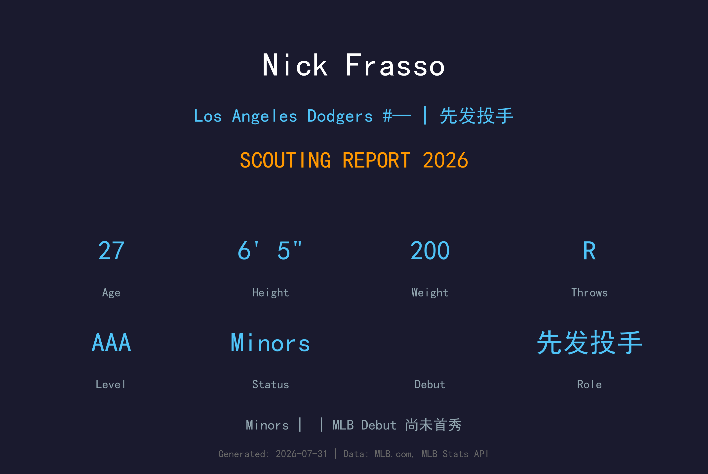
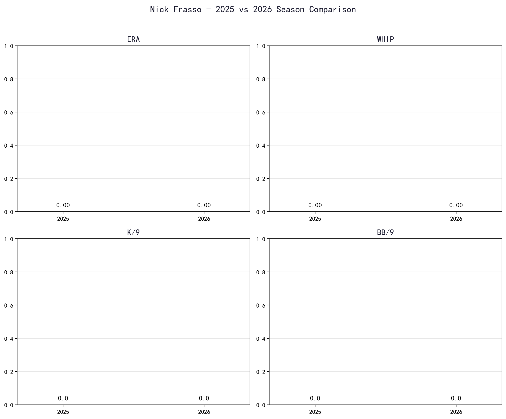
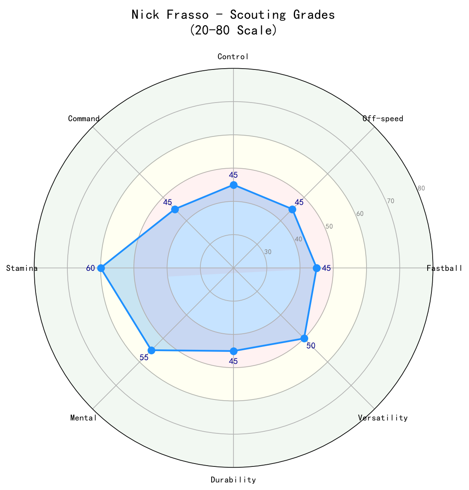

Los Angeles Dodgers #58 | 投手 | Minors

Nick Frasso 是道奇农场系统中排名前列的右投先发新秀，以高挑身材、高转速快速球与进步明显的变化球组合著称。他的四缝线快速球最高可达 99 mph，均速约在 95-98 mph 之间，搭配滑球、变速球与偶尔的切球，具备先发投手的完整武器库。2024 年他进行 Tommy John 手术并因此错过 2025 赛季，2026 年他正在 AAA Albuquerque 逐步重建投球量与状态。虽然大联盟首秀尚未到来，但道奇将他视为未来轮值或高杠杆后援的潜在人选。他的发展关键将是术后复原、控球稳定性，以及变化球的持续进步。
Nick Frasso 在大学时期展现出成为大联盟投手的潜力，积累了扎实的基础与比赛经验。
Nick Frasso 在 2021 年 MLB 选秀第 4 轮被选中，开启职业棒球生涯。
Nick Frasso 目前位于道奇小联盟体系，是球队长期深度规划的一部分。
2026 年大联盟样本有限或尚未登上大联盟，数据主要参考小联盟与过往表现。

📈 上图为近三年核心数据趋势。柱状图高度代表该年度表现，便于快速比较球员状态的上升或下滑。
Frasso 的王牌球种。6 尺 5 寸的身材加上高转速（高于平均 转速 rate），让他的快速球不仅有球速，还有明显的上飘与 late life。他能在好球带上方制造挥空，也能下沉到 thigh-high 制造 滚地球。球速在术后是否能完全回到 99 mph 巅峰，是 2026 年观察重点。
对右打者的主要出局武器。滑球速度适中、横移明显，与快速球形成绝佳速差与位移差。Frasso 在 2023 年交易前后持续提升这颗球的稳定性，有望成为未来两好球后的首选。
对左打者的关键武器。变速球与快速球有约 10 mph 速差，并带有不错的下沉，能让左打者打出滚地球或挥空。这颗球的进步决定了他是否能长期担任先发，而非转型后援。
近年加入的配球，用来对付左打者并制造断棒。切球填补了快速球与滑球之间的速度空档，让打者更难预测。仍在开发中，使用频率较低。
Frasso 采用高四分之三（high-three-quarters）投球角度，出手点高且靠近身体，配合 6 尺 5 寸的身高，让球从打者视野上方陡降。他的动作较为流畅，跨步幅度大，能充分利用下半身带动手臂。Tommy John 术后，道奇复健团队重点关注他的手臂位置与 后续动作，确保动作不会给复原中的韧带带来额外压力。

| 项目 | 评分 (20-80 量表) | 等级 |
|---|---|---|
| 四缝线 (Fastball) | 65 | A- |
| 滑球 (Slider) | 60 | B+ |
| 变速球 (Changeup) | 55 | B |
| 切球 (Cutter) | 50 | B- |
| 控球 (控球) | 45 | C+ |
| 指挥 (控球精准度) | 50 | B- |
| 心理素质 (Mental) | 50 | B- |
| 耐力/健康 (Durability) | 40 | C |
| 三振能力 (Strikeout Ability) | 60 | B+ |
Nick Frasso 拥有成为 MLB 轮值后端或高杠杆后援的 原始球威，但 Tommy John 术后复原与控球稳定性将决定他的最终高度。2026 年是他的关键观察年。
B 级 / 高潜力但尚未大联盟 debut 的先发新秀
Nick Frasso 出生于加州 San Jose，成长于棒球氛围浓厚的湾区。高中时期并未成为顶尖选秀热门，但他进入 Loyola Marymount University 后迅速成长。在大学期间，他凭借快速球球速的提升与滑球的进步，成为西海岸联盟中备受瞩目的投手。
Frasso 以沉稳、专注著称。高大的身材与流畅的动作让他在场上显得从容不迫。他与道奇队医、复健团队密切合作，展现出对术后恢复过程的耐心与职业态度。